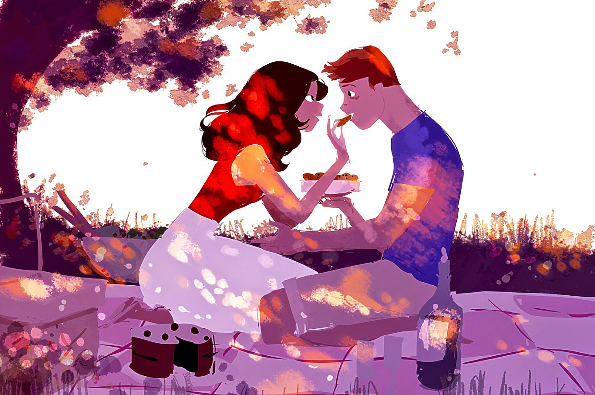

Revue du site de rencontre OkCupid
OkCupid est l'un des plus anciens sites de rencontres, ayant été fondé en 2004. Heureusement, OkCupid a réussi à moderniser sa plate-forme au fil des ans. Le site a connu une croissance solide au fil des ans et reste l'un des sites de rencontre les plus populaires et les plus utilisés.
OkCupid se concentre sur la fourniture de correspondances de meilleure qualité et utilise des tests de personnalité pour voir si les gens sont bien adaptés. La plupart des membres ont entre 25 et 34 ans. Cependant, il y a beaucoup d'utilisateurs dans toutes les tranches d'âge.
En ce qui concerne les relations, vous pouvez exprimer votre intérêt pour de nouveaux amis à court terme, des rencontres, des rencontres à court terme et des rencontres à long terme.
L'inscription à OkCupid est assez simple. Tout d'abord, vous remplissez vos informations de base, comme le nom et l'emplacement. Vous pouvez également vous inscrire sur Facebook et faire remplir la plupart de ces informations pour vous.
Cependant, vous inscrire ne signifie pas que vous êtes inscrit et libre de partir. La caractéristique distinctive d'OkCupid est ses tests de personnalité. Avant de pouvoir trouver des correspondances et envoyer des messages, vous devez répondre à un tas de questions qui jaugeront votre personnalité.
OkCupid vous suggère de répondre entre 50 et 100 questions pour commencer. Cela prend un peu de temps mais vous aide à trouver de meilleures correspondances.